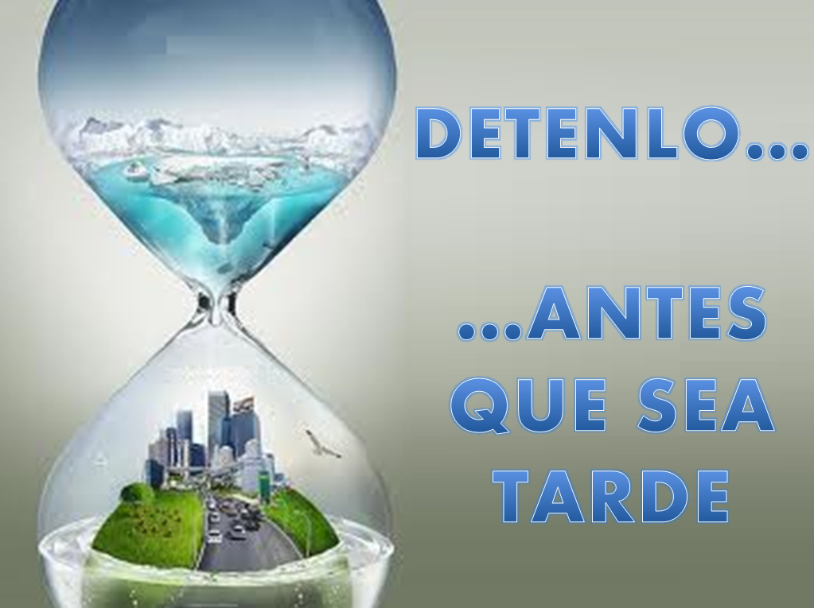

El lugar del mundo con los yacimientos de coltán más explotados es República del Cóngo, en África.
Y como concecuencia de esto, hay miles de desplazamientos forzosos, violación de ancianas, mujeres y niñas, miles de civilies han huído de sus hogares, y hay millones de personas refugiadas.
Como conclusión podemos decir que el coltán es uno de los principales causantes del deterioramiento de medio ambiente;
a causa de la sobreexplotación de coltán se está también violando los derechos humanos de los habitantes del Congo y se están explotando inhumanamente;
Y por último, el marco legal de ésta situación nos permite ver como nosotros
los consumidores tenemos deberes tanto con la sociedad como con el medio ambiente.
